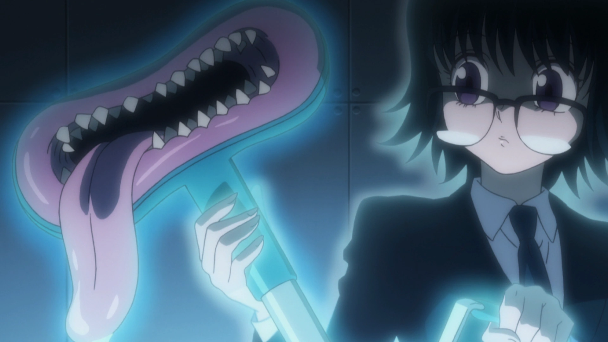

Classe Conjuração (Conjuration) – Nen
A Conjuração é uma das seis categorias principais do Nen no universo de Hunter x Hunter. Os usuários dessa classe têm a habilidade de materializar objetos a partir da aura. Esses itens podem ter funções específicas e regras próprias.
Resumo rápido: Ideal para criar ferramentas, armas ou mecanismos complexos usando aura. Precisa de muito foco e criatividade.
Características principais
- Permite criar objetos físicos com aura.
- Objetos podem ser permanentes enquanto a técnica estiver ativa.
- Geralmente requer condições, rituais ou contratos para ativação.
- Exige concentração, memorização e visualização precisa.
Exemplo Principal: Kaito (Kite)

Kaito é um conjurador que criou a técnica Crazy Slots, onde ele invoca um palhaço que gira uma roleta e sorteia uma entre 9 armas diferentes.
- As armas são aleatórias, e ele não pode trocar até usá-la.
- A técnica combina imprevisibilidade com destruição precisa.
Outro exemplo: Shizuku
Shizuku, da Trupe Fantasma, criou um aspirador de pó chamado Deme-chan. Ele é capaz de sugar qualquer coisa inorgânica, como sangue, objetos e até corpos, desde que ela não os reconheça como "vivos".
- Ótima para esconder provas ou limpar locais após combates.
- Apesar de parecer simples, a técnica tem enorme valor estratégico.
Vantagens e Desvantagens
- ✔ Vantagens: Alta utilidade estratégica, técnicas únicas e versáteis.
- ✘ Desvantagens: Depende de memorização e foco. Objetos podem desaparecer se o usuário perder a concentração.
Conjuração - Kaito & Shizuku